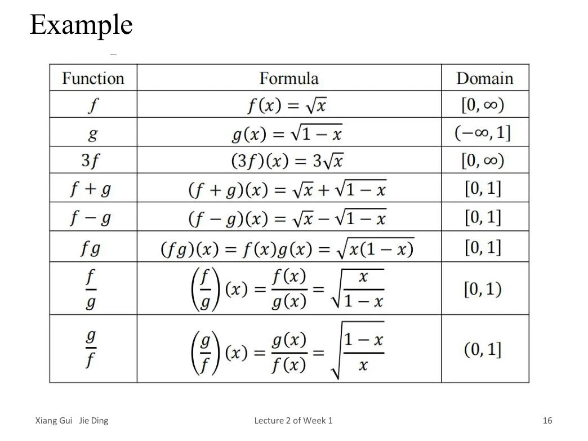

HDD4010 工程数学 I · 第 01 / 08 讲
第 1 章 · 预备知识、直线与函数
Preliminaries, Lines and Functions
所属章节：第 1 章 函数、极限与连续性
资料来源 · 3 项 / 已附 0 项
General/General Course Information.html未附原文件Topic 1/EMI_Week1_Lecture1.pdf未附原文件Topic 1/EMI_Week1_Lecture2.pdf未附原文件
未附文件仅列原始名称；版本与核对日期由维护者登记。
本节定位
HDD4010 工程数学 I 是整门微积分的入口课：课程内容按「直角坐标系 → 函数、极限与连续 → 微分 → 积分」这条主线展开，全学期分 Topic 1 至 Topic 7 共七个专题，最后有一次模拟卷。本节把 Topic 1 的两次课与课程信息页合并成一讲，是后面所有内容的地基——极限要用区间和绝对值来写，导数要用直线的斜率来定义，积分要用函数的图形来理解。
本节还包含课程的考核规则：考试不允许使用计算器，但会发一张公式表；所有解答必须写出所用公式、代入过程与中间步骤，只写答案不给分。因此从第一讲起就要养成「写步骤、留中间式」的习惯。
学完本节你应当能够：
- 区分 ℕ、ℤ、ℚ 与无理数，并把循环小数化成分数
- 把不等式与含绝对值的方程、不等式的解集写成区间
- 在直角坐标系中求两点间的距离、中点，并写出过两点的直线方程
- 把圆、抛物线、椭圆、双曲线的方程与图形对应起来
- 判断一个对应是否为函数、是否一一对应，并求复合函数的定义域
- 用多项式除法、因式分解与三角恒等式把表达式化简成可继续运算的形式
1.1 课程信息与考核方式
课程代码 HDD4010，课程内容为：Cartesian Coordinate System（直角坐标系）、Functions, Limits and Continuity（函数、极限与连续性）、Differentiation（微分）、Integration（积分）。任课教师 Jie Ding（dingjie@hebut.edu.cn），辅导时间需邮件预约；Lahti 校区的答疑也通过邮件安排。
考核要点（源文件与课程信息页）：课程有期末考试，2026 年 10 月举行；第一次考试定在 10 月 21 日，需要在 10 月 14 日 前完成报名。考试不允许使用计算器，会提供一张与上一学年类似的公式表（formula sheet 之后放在 Moodle 上）。参考书是 Robert A. Adams 的 Calculus: A Complete Course，历年试卷在 exams.ltky.fi。讲座与习题课目前不强制点名，但强烈建议出席。
10 ln(3/2) / ln 2 而不是小数。只写最终答案不给分，所以每一步都要写清「用了哪个公式、做了哪个代换」。1.2 实数与实轴
微积分建立在实数系之上。实数（real number）是能写成有限或无限小数展开的数，例如 5 = 5.0、1/3 = 0.333…、−3/4 = −0.75、√2 = 1.4142…、π = 3.1415…，省略号表示小数位无限延伸。
几何上，实数与数轴（real line）上的点一一对应，这条数轴上没有洞：每个点都对应一个实数。实数集与实轴都用符号 ℝ 表示。这一点是「极限存在」的深层依据：数列或函数值只要被夹在两个不断靠近的实数之间，就一定夹住了某个实数。
不等式的四条基本规则（a, b, c ∈ ℝ）：
a < b ⟹ a ± c < b ± c（同加同减不变号）a < b且c > 0⟹ac < bc（乘正数不变号）a < b且c < 0⟹ac > bc（乘负数要变号）0 < a < b ⟹ 0 < 1/b < 1/a（正数取倒数要颠倒次序）
x−1），必须先讨论它的正负，不能直接乘过去。取倒数时也必须先确认两边同号。1.3 实数的子集
- 自然数
ℕ = {1, 2, 3, …} - 整数
ℤ = {0, ±1, ±2, ±3, …} - 有理数
ℚ = {p/q : p, q ∈ ℤ, q ≠ 0}，等价特征是「小数有限或循环」 - 无理数
ℝ∖ℚ，即「小数无限且不循环」，如√2, π, √3
把循环小数化成分数的标准做法是：设该数为 x，乘 10^k（k 为循环节长度）后与原式相减，消去无限循环部分。源文件的例子：设 x = 2.0909… = 2.09̄，循环节两位，乘 10² 得 100x = 209.0909…；两式相减 99x = 207，故 x = 207/99 = 23/11。
1.4 区间
区间（interval）是 ℝ 的子集，用来紧凑地表示不等式的解集。设 a < b：
| 记号 | 含义 | 端点 | 名称 |
|---|---|---|---|
(a, b) | a < x < b | 两端都不含 | 开区间 |
[a, b] | a ≤ x ≤ b | 两端都含 | 闭区间 |
[a, b) | a ≤ x < b | 含左不含右 | 半开区间 |
(a, b] | a < x ≤ b | 含右不含左 | 半开区间 |
(a, ∞) | x > a | 无上端点 | 无穷区间 |
(−∞, b] | x ≤ b | 无下端点 | 无穷区间 |
关键提醒：∞ 与 −∞ 不是数，只表示「该方向没有端点」，所以无穷一侧永远用小括号，绝不写成 [a, ∞]。全体实数是 ℝ = (−∞, ∞)。
1.5 绝对值
绝对值（absolute value，也叫 magnitude）定义为分段形式：|x| = x（x ≥ 0），|x| = −x（x < 0）。几何意义是「x 到 0 的距离」；更一般地，|x − y| 是数轴上 x 与 y 两点的距离。
四条性质：|−x| = |x|；|xy| = |x||y|；|x/y| = |x|/|y|（y ≠ 0）；三角不等式 |x ± y| ≤ |x| + |y|。
三角不等式的证明（源文件用平方法）：由 ±2xy ≤ 2|xy| = 2|x||y|，得
|x ± y|² = x² ± 2xy + y² ≤ |x|² + 2|x||y| + |y|² = (|x| + |y|)²。两边开平方（都非负，开方保序）即得结论。这个「先平方、再用非负性」的手法在不等式证明里反复出现。
含绝对值的方程与不等式（a > 0）：
| 形式 | 等价于 | 几何读法 |
|---|---|---|
|x| = a | x = ±a | 到 0 的距离恰为 a |
|x| < a | −a < x < a | 距离小于 a 的开区间 |
|x| ≤ a | −a ≤ x ≤ a | 距离不超过 a 的闭区间 |
|x| > a | x < −a 或 x > a | 两个外侧射线 |
源文件两个例子：|2x+5| = 1 给出 2x+5 = ±1，即 x = −3 或 x = −2；|3x−6| ≤ 3 先提公因子得 3|x−2| ≤ 3，即 |x−2| ≤ 1，读作「x 到 2 的距离不超过 1」，于是 1 ≤ x ≤ 3。
|x − c| 的形式，先翻译成「到 c 的距离」，不等式几乎不用算就能读出答案；只有当绝对值外面还套着别的运算时才需要分类讨论。1.6 平面直角坐标系
平面上任一点的位置可用两条互相垂直的实轴确定：水平的是 x 轴（正方向向右），竖直的是 y 轴（正方向向上），交点 O 是原点。点 P 记为 P(a, b)，a 是 x 坐标，b 是 y 坐标，有序对 (a, b) 称为坐标对（coordinate pair）。这样建立的系统叫直角坐标系（rectangular / Cartesian coordinate system）。
所有有序对构成的集合记作 ℝ × ℝ 或 ℝ²。两条坐标轴把平面分成四个象限（quadrant），从右上开始按逆时针编号为 I、II、III、IV。注意坐标轴上的点不属于任何象限。
1.7 增量、距离公式与中点公式
质点从 P₁(x₁, y₁) 移到 P₂(x₂, y₂) 时，坐标的净变化叫增量（increment）：Δx = x₂ − x₁（run，水平增量）、Δy = y₂ − y₁（rise，竖直增量）。增量可以为正也可以为负。
由勾股定理，两点距离为 D = √(Δx² + Δy²) = √((x₂−x₁)² + (y₂−y₁)²)。线段 P₁P₂ 的中点 M(x, y) 取两端坐标的平均：x = (x₁+x₂)/2，y = (y₁+y₂)/2。
源文件例子：P₁(−2, 6)、P₂(4, −2)。D = √(6² + (−8)²) = √(36+64) = 10；中点 M = ((−2+4)/2, (6−2)/2) = (1, 2)。
1.8 直线、斜率与直线方程
两个不同点确定唯一一条直线。非竖直直线的斜率（slope）定义为「纵向增量除以横向增量」：m = rise/run = Δy/Δx = (y₂−y₁)/(x₂−x₁)。同一条直线上任取两点算出的 m 都相同——因为对应三角形相似（源文件用相似三角形 P₁P₂Q 与 P₁′P₂′Q′ 说明）。
竖直直线 Δx = 0，斜率不存在（不是 0，也不是 ∞）。这一点在写切线、法线时非常关键：竖直线要单独处理。
平行与垂直：平行直线斜率相等；两条非竖直直线垂直时 m₁m₂ = −1。源文件的证明思路是：把一条直线旋转 90° 得到另一条，两个直角三角形相似，于是 m₂ = −Δx/Δy = −1/m₁。
四种常用直线方程：
| 名称 | 方程 | 适用情形 |
|---|---|---|
| 水平线 | y = b | 斜率为 0 |
| 竖直线 | x = a | 斜率不存在，不能写成 y = mx+b |
| 点斜式 point-slope | y − y₁ = m(x − x₁) | 已知一点与斜率 |
| 斜截式 slope-intercept | y = mx + b | b 是 y 截距 |
| 一般式 general linear | Ax + By = C | A、B 不同时为 0，可表示竖直线 |
点斜式的来源：设 P(x, y) 是直线上一动点，则 (y − y₁)/(x − x₁) = m（x ≠ x₁），整理即得。斜截式是点斜式取 (0, b) 的特例；若已知 x 截距 (a, 0)，也可写成 y = m(x − a)。
源文件例子：求过 P₁(−2, 6) 与 P₂(4, −2) 的直线。m = (−2−6)/(4+2) = −8/6 = −4/3；取 P₁ 代入点斜式：y − 6 = −(4/3)(x + 2)，即 y = −(4/3)x + 10/3；两边乘 3 得一般式 4x + 3y = 10。
1.9 二次方程的图形：圆、抛物线、椭圆、双曲线
二元二次方程的一般形式是 Ax² + Bxy + Cy² + Dx + Ey + F = 0（A、B、C 不全为零），其图形统称圆锥曲线（conic section）。本课程只需要掌握对称轴平行于坐标轴的情形，此时 B = 0，由 A、C 的符号就能判断类型：
| 条件 | 图形 | 标准方程 |
|---|---|---|
A = C ≠ 0 | 圆 circle | (x−h)² + (y−k)² = r² |
AC > 0，A ≠ C | 椭圆 ellipse | (x−h)²/a² + (y−k)²/b² = 1 |
AC < 0 | 双曲线 hyperbola | (x−h)²/a² − (y−k)²/b² = 1 |
| A 或 C 之一为 0 | 抛物线 parabola | y = ax² + bx + c 或 x = ay² + by + c |
圆与圆盘。圆心 C(h, k)、半径 r > 0 的圆是到 C 距离恰为 r 的点集：(x−h)² + (y−k)² = r²；展开后是 x² + y² + ax + by = c 的形状。把「= r²」换成「≤ r²」得到闭圆盘（closed disk），换成「< r²」得到开圆盘（open disk）。
抛物线。抛物线是到定点（焦点 focus F）与定直线（准线 directrix L）距离相等的点集。若焦点 F(0, p)、准线 y = −p，由 √(x² + (y−p)²) = |y + p| 两边平方化简得 x² = 4py，即 y = x²/(4p)；p > 0 开口向上，p < 0 开口向下。一般抛物线写为 y = ax² + bx + c。
椭圆。椭圆是到两个焦点 F₁, F₂ 距离之和为常数的点集；半长轴 a、半短轴 b（a ≥ b > 0）时，中心到焦点的距离 c = √(a² − b²)，这个常数和等于 2a。以原点为中心、焦点 (±c, 0) 时，条件写作 √((x+c)² + y²) + √((x−c)² + y²) = 2a；移项、两边平方两次，可化简为标准方程 x²/a² + y²/b² = 1。
双曲线。双曲线是到两焦点距离之差的绝对值为常数的点集；半实轴 a、半虚轴 b 时 c = √(a² + b²)，常数差为 2a。标准方程 x²/a² − y²/b² = 1，两条渐近线（asymptote，曲线无限接近但不相交的直线）为 y = ±(b/a)x。
c² = a² − b²（a 最大）；双曲线 c² = a² + b²（c 最大）。记法：椭圆「加起来等于 2a」，双曲线「差等于 2a」，而 c 永远是到焦点的距离，双曲线中 c 比 a 长。1.10 函数、定义域与值域
从集合 X 到集合 Y 的函数（function）f 是一条规则：对 X 中每个输入 x，指定唯一的输出 y ∈ Y。X 叫定义域（domain），Y 中实际被取到的全体叫值域（range）。写作 y = f(x)，读作 f of x；x 是自变量（independent variable），y 是因变量（dependent variable）。有时同一个字母既作因变量又作函数名，如 y = y(x)。
三条判断标准：
- 「唯一输出」：一个 x 对应两个 y 就不是函数（例如
x = y²整体不是函数） - 垂直线检验（vertical line test）：图形是函数，当且仅当每条竖直线与图形至多交于一点
- 一一对应（one-to-one）：
x₁ ≠ x₂ ⟹ f(x₁) ≠ f(x₂)；等价于水平线检验（horizontal line test），即每条水平线至多交于一点
一一对应是后面「反函数」存在的前提（Topic 5 会用），而一一对应的图形判据正是水平线检验。
1.11 奇函数与偶函数
设 f 的定义域关于原点对称。偶函数（even function）：f(−x) = f(x)，图形关于 y 轴对称，例如 x²、|x|。奇函数（odd function）：f(−x) = −f(x)，图形关于原点对称，例如 x、x³。
这两个性质在后面反复用：定积分中奇函数在对称区间上积分为 0、偶函数可以折半（第 6 讲），泰勒型展开中奇偶性决定只出现奇次或偶次项（本课不展开），而三角函数的奇偶性决定了 reduction formula 的符号。绝大多数函数既不是奇函数也不是偶函数，例如 x² + x。
1.12 函数的四则运算与复合函数
设 f、g 是函数，c 是常数，则 (cf)(x) = cf(x)、(f ± g)(x) = f(x) ± g(x)、(fg)(x) = f(x)g(x)、(f/g)(x) = f(x)/g(x)（要求 g(x) ≠ 0）。这些运算的定义域是两者定义域的交集，除法还要再挖掉分母为零的点。
复合函数（composite function）：若 g 的值域落在 f 的定义域内，则 (f ∘ g)(x) = f(g(x))。其定义域由两个条件同时成立决定：① x 在 g 的定义域内；② g(x) 在 f 的定义域内。
源文件例子：f(x) = 1/x（x ≠ 0），g(x) = √x（x ≥ 0），则 (f ∘ g)(x) = 1/√x，定义域是 x > 0——因为 x = 0 虽然属于 g 的定义域，但 g(0) = 0 不属于 f 的定义域。
f ∘ g ≠ g ∘ f。例如上面的例子里 (g ∘ f)(x) = √(1/x)，定义域是 x > 0，但表达式与 1/√x 不同。求复合函数一律「先内后外」，定义域也按「先内后外」逐层筛。1.13 分段函数与三个标准例子
分段函数（piecewise function）在定义域的不同子集上用不同公式，各子集互不相交、并起来正好是整个定义域：
f(x) = f₁(x)（x ∈ D₁），f(x) = f₂(x)（x ∈ D₂），……
本课后面反复出现的三个例子：
- 绝对值函数
|x| = x（x ≥ 0）、|x| = −x（x < 0）：连续但x = 0处不可导 - 符号函数
sgn(x) = 1（x > 0）、0（x = 0）、−1（x < 0）：定义域 ℝ，值域{−1, 0, 1}，关于原点对称（奇函数），x = 0处跳跃间断 - Heaviside 阶跃函数
H(x) = 1（x ≥ 0）、0（x < 0）：若 t 表示时间，它模拟「在 t = 0 时刻被打开的开关」，在 0 处右连续但左不连续
1.14 多项式函数
多项式函数：f(x) = aₙxⁿ + aₙ₋₁xⁿ⁻¹ + ⋯ + a₂x² + a₁x + a₀，其中 n ≥ 0 是整数，a₀, …, aₙ 是系数（coefficient），aₙ ≠ 0；n 叫次数（degree），记 deg f = n。例如 deg(x²−2x+8) = 2、deg(8x⁵) = 5、deg 3 = 0。
次数的两条运算法则：deg(f ± g) ≤ max(deg f, deg g)（可能因为首项相消而降低）；deg(fg) = deg f + deg g（首项相乘不会消掉）。
| 次数 | 名称 | 例子 |
|---|---|---|
| 0 | 常数多项式 constant | 3 |
| 1 | 一次（线性）多项式 linear | 3x − 1 |
| 2 | 二次多项式 quadratic | x² − 2x + 8 |
| 3 | 三次多项式 cubic | 2x³ − 3x² + 4 |
| 4 | 四次多项式 quartic | x⁴ − 1 |
1.15 有理函数与除法算法
有理函数（rational function）是两个多项式的商 f(x) = P(x)/Q(x)（Q(x) ≠ 0），定义域是 ℝ 去掉使 Q(x) = 0 的点。例如 1/x² 的定义域是 ℝ∖{0}，(x+2)/(x²−4) 的定义域是 ℝ∖{−2, 2}——注意分子分母有公因子 x+2 时，定义域仍要挖掉该点，因为原式在该点无定义（这是「可去间断」的来源，第 2 讲会讲）。
除法算法（division algorithm）：若 deg P ≥ deg Q 且 Q ≠ 0，则存在唯一的多项式 S（商）与 R（余式）使 P(x)/Q(x) = S(x) + R(x)/Q(x)，其中 deg R < deg Q 或 R = 0。等价地 P = QS + R。
源文件例子：把 (2x³ − 3x² + 3x + 4)/(x² + 1) 写成商加余式。长除法得商 2x − 3、余式 x + 7，于是
(2x³ − 3x² + 3x + 4)/(x² + 1) = 2x − 3 + (x + 7)/(x² + 1)。
源文件还给了「短除法」：给分子凑上低次项后提公因子，再减回去保持等式不变：
2x³ − 3x² + 3x + 4 = (2x³ + 2x) − 3x² − 3 + (x + 7) = 2x(x²+1) − 3(x²+1) + (x+7)，两步就看出商与余式。验算方法：把结果乘回去，必须还原成原分子。
1.16 多项式的根、零点与因式分解
使 P(r) = 0 的数 r 叫多项式的根（root）或零点（zero）。例如 x² − 4 的根是 ±2；x³ − 3x² + 3x − 1 = (x−1)³ 有三重根 r = 1，称其重数（multiplicity）为 3。
因式定理（Factor Theorem）：(x − r) 是 P(x) 的因式，当且仅当 P(r) = 0；此时 P(x) = (x − r)Q(x)，且 deg Q = deg P − 1。
求根公式：ax² + bx + c = 0（a ≠ 0）的根为 x = (−b ± √(b² − 4ac))/(2a)；判别式 Δ = b² − 4ac 决定根的性质：Δ > 0 两个不同实根；Δ = 0 一个二重实根；Δ < 0 一对共轭复根（在实数范围内不可分解）。
源文件三个例子：(a) x² − 5x + 6，Δ = 1 > 0，根为 2 与 3，故 = (x−2)(x−3)；(b) 9x² − 6x + 1，Δ = 0，根为 1/3，故 = 9(x − 1/3)² = (3x−1)²；(c) x² + 2x + 5，Δ = −16 < 0，无实根，不能分解成实线性因式。
常用分解技巧（必须熟练，后面拆部分分式全靠它）：
- 提公因子：
ax² + ax = a(x² + x) - 平方差：
a² − b² = (a−b)(a+b) - 立方差：
a³ − b³ = (a−b)(a² + ab + b²) - 立方和：
a³ + b³ = (a+b)(a² − ab + b²) - 分组分解：
x³ − x² − 4x + 4 = x²(x−1) − 4(x−1) = (x−1)(x−2)(x+2)
源文件例子：(a) x³ + 1 = (x+1)(x² − x + 1)，其中 x² − x + 1 的判别式为 −3 < 0，不可再分；(b) x⁴ − 1 = (x²−1)(x²+1) = (x−1)(x+1)(x²+1)，其中 x² + 1 判别式为 −4 < 0。
1.17 三角函数：单位圆定义与基本恒等式
在单位圆 x² + y² = 1 上取起点 A(1, 0)。对任意实数 t，从 A 沿圆走过有向弧长 t（逆时针为正）到达点 Pₜ，则定义 cos t = Pₜ 的 x 坐标，sin t = Pₜ 的 y 坐标。这样 sin、cos 的定义域是全体实数，值域是 [−1, 1]。
弧度制（radian）：一整圈对应 2π 弧度也就是 360°，所以 1° = π/180 弧度，1 弧度 = 180/π ≈ 57.3°。微积分里所有公式（尤其 (sin x)′ = cos x）都只在弧度制下成立，因此本课一律用弧度。
| 角度 | 0° | 30° | 45° | 60° | 90° |
|---|---|---|---|---|---|
| 弧度 | 0 | π/6 | π/4 | π/3 | π/2 |
| cos | 1 | √3/2 | √2/2 | 1/2 | 0 |
| sin | 0 | 1/2 | √2/2 | √3/2 | 1 |
四个基本性质：平方关系 cos²t + sin²t = 1（由单位圆方程直接得到），并由此得 1 + tan²t = sec²t、1 + cot²t = csc²t；周期性 cos(t + 2π) = cos t、sin(t + 2π) = sin t；奇偶性 cos 是偶函数、sin 是奇函数；诱导公式（reduction formula）：
cos(π/2 − t) = sin t，sin(π/2 − t) = cos t，cos(π − t) = −cos t，sin(π − t) = sin t。
源文件例子：(a) sin(7π/6) = sin(π + π/6) = −sin(π/6) = −1/2；(b) 若 cos t = 3/5 且 t 在第一象限，则 sin²t = 1 − 9/25 = 16/25，因第一象限 sin 为正，取 sin t = 4/5。
sin²t = 16/25 得到 sin t = ±4/5，符号由 t 所在象限（或题目给出的范围）决定。少写一句「第一象限故取正」就丢分。原版图页（源 PDF 插图页）



| English | 中文 | 说明 / 例句 |
|---|---|---|
| real number | 实数 | A number with a terminating or non-terminating decimal expansion. |
| real line | 实轴 | Every point on the line corresponds to exactly one real number; there are no holes. |
| rational number | 有理数 | A quotient p/q of integers; its decimal expansion terminates or repeats. |
| interval | 区间 | A subset of ℝ written with brackets; open endpoints use parentheses. |
| absolute value | 绝对值 | |x| is the distance from x to 0; |x − y| is the distance between x and y. |
| triangle inequality | 三角不等式 | |x ± y| ≤ |x| + |y|, proved by squaring both sides. |
| Cartesian coordinate system | 直角坐标系 | Two perpendicular axes meeting at the origin; points are ordered pairs (x, y). |
| quadrant | 象限 | The four regions I–IV cut out by the coordinate axes. |
| increment | 增量 | The net change Δx = x₂ − x₁ and Δy = y₂ − y₁. |
| slope | 斜率 | m = rise/run = Δy/Δx; undefined for a vertical line. |
| point-slope form | 点斜式 | y − y₁ = m(x − x₁) for a non-vertical line through (x₁, y₁). |
| conic section | 圆锥曲线 | Circle, parabola, ellipse and hyperbola, given by quadratic equations in x and y. |
| domain / range | 定义域 / 值域 | The set of admissible inputs / the set of attained outputs. |
| one-to-one function | 一一对应函数 | f(x₁) ≠ f(x₂) whenever x₁ ≠ x₂; checked by the horizontal line test. |
| composite function | 复合函数 | (f ∘ g)(x) = f(g(x)); its domain requires both x ∈ dom g and g(x) ∈ dom f. |
| division algorithm | 除法算法 | P/Q = S + R/Q with deg R < deg Q, obtained by long division. |
设 x = 2.0909…。循环节是 09，长度 2，故两边乘 10² = 100：100x = 209.0909…。
两式相减，无限循环部分抵消：100x − x = 209.0909… − 2.0909…，即 99x = 207。
所以 x = 207/99 = 23/11（分子分母同除以 9）。因为可以写成两整数之比，所以它是有理数。
方法迁移：循环节长 k 就乘 10^k；若小数点后有不循环的「前导部分」，先乘 10^m 把前导部分移到整数位，再乘 10^k，两次相减后解方程。
先提公因子：|3x − 6| = |3(x − 2)| = 3|x − 2|，不等式化为 3|x − 2| ≤ 3，即 |x − 2| ≤ 1。
几何读法：x 到 2 的距离不超过 1，故 2 − 1 ≤ x ≤ 2 + 1，即 1 ≤ x ≤ 3，写成区间 [1, 3]。
代数验算：由 |x| ≤ a ⟺ −a ≤ x ≤ a，得 −1 ≤ x − 2 ≤ 1，三边加 2 同样得 1 ≤ x ≤ 3。端点处 |3−6| = 3、|9−6| = 3 都取等号，所以是闭区间。
距离：Δx = 4 − (−2) = 6，Δy = −2 − 6 = −8，D = √(6² + (−8)²) = √100 = 10。
中点：x = (−2 + 4)/2 = 1，y = (6 − 2)/2 = 2，即 M(1, 2)。
斜率：m = (y₂ − y₁)/(x₂ − x₁) = (−8)/6 = −4/3。取 P₁ 写点斜式：y − 6 = −(4/3)(x + 2)，展开得 y = −(4/3)x + 10/3。
化为一般式：两边乘 3 得 3y = −4x + 10，即 4x + 3y = 10。验算：代 P₂(4, −2) 得 16 − 6 = 10，成立。
这条直线与坐标轴围成的三角形面积：x 截距 10/4 = 2.5、y 截距 10/3，面积 (1/2)(5/2)(10/3) = 25/6。
(a) 7π/6 = π + π/6，用诱导公式 sin(π + u) = −sin u（可由 sin(π − t) = sin t 与奇函数性质推出）：sin(7π/6) = −sin(π/6) = −1/2。
(b) 由平方关系 sin²t = 1 − cos²t = 1 − (3/5)² = 16/25。开方得 sin t = ±4/5；t 在第一象限，sin 为正，故 sin t = 4/5。
通用思路：先判断角落在哪个「参考角」上（把 t 化成 π/2 ± u、π ± u、2π − u 的形式）→ 用诱导公式把函数名与符号分离 → 再查特殊角表。
- 把
0.4̄5̄ = 0.4545…化成最简分数。 - 解不等式
|x − 1| ≥ 2，用区间表示解集。 - 求
f(x) = √(4 − x²) + 1/(x − 1)的定义域。 - 判断
g(x) = (x² − 1)/(x − 1)与h(x) = |x|的奇偶性（注意 g 的定义域）。 - 求圆
x² + y² − 4x + 6y − 3 = 0的圆心与半径。 - 把
x³ − 2x² + x − 3除以x − 2，写出商与余式；再把x³ + 1在实数范围内分解到不可再分。
答案与思路
1. 设 x = 0.4545…，乘 100 得 100x = 45.4545…，相减 99x = 45，故 x = 45/99 = 5/11。
2. |x − 1| ≥ 2 表示「到 1 的距离至少为 2」，故 x ≤ −1 或 x ≥ 3，即 (−∞, −1] ∪ [3, ∞)。注意 ≥ 对应「外侧」，与 ≤ 的「内侧区间」相反。
3. 两个条件：根号内 4 − x² ≥ 0 ⟹ −2 ≤ x ≤ 2；分母 x ≠ 1。取交集得 [−2, 1) ∪ (1, 2]。
4. g 的定义域是 x ≠ 1，不关于原点对称，因此既非奇也非偶（虽然化简后 g(x) = x + 1）。h(−x) = |−x| = |x| = h(x)，是偶函数。这道题说明：判奇偶必须先看定义域是否对称。
5. 配方：(x² − 4x + 4) + (y² + 6y + 9) = 3 + 4 + 9，即 (x−2)² + (y+3)² = 16。圆心 (2, −3)，半径 r = 4。
6. 长除法（或综合除法）：x³ − 2x² + x − 3 = (x − 2)(x² + 1) + (−1)，商 x² + 1，余式 −1。分解：x³ + 1 = (x+1)(x² − x + 1)，第二个因式判别式 −3 < 0，到此为止。
< 用圆括号、≤ 用方括号；无穷一侧永远圆括号。写成 [1, 3) 而正确答案是 [1, 3]，整题判错。(x²−1)/(x−1) = x+1 只在 x ≠ 1 时成立；这个「洞」是后续可去间断与极限讨论的关键，不能因为化简就把定义域改掉。c² = a² − b²，双曲线 c² = a² + b²，且双曲线渐近线是 y = ±(b/a)x 而不是 ±(a/b)x（a 在 x 项下面）。方法与清单
解含绝对值的不等式（四步）
- 把绝对值内部整理成
x − c的形式（提公因子），读出「到 c 的距离」 - 判断是「内侧」（
≤,<）还是「外侧」（≥,>） - 内侧写成
[c−a, c+a]型区间；外侧写成两段射线的并集 - 检查端点是否取到，回代验证一个端点值
求复合函数 f ∘ g 的定义域（三步）
- 写出 x 必须属于 dom g 的条件
- 写出
g(x)必须属于 dom f 的条件（这是最易漏的一步） - 两个条件取交集，并检查是否有分母为零、根号内为负的附加限制
求直线方程（四步）
- 先看是否竖直：两点 x 坐标相同则直接写
x = a - 否则算斜率
m = (y₂−y₁)/(x₂−x₁) - 任取一点写点斜式
y − y₁ = m(x − x₁) - 按题目要求整理成斜截式或一般式，并回代另一点验算
圆锥曲线判别（三步）
- 把方程整理成
Ax² + Cy² + Dx + Ey + F = 0（先确认没有 xy 项） - 看 A、C：相等且非零是圆；同号不等是椭圆；异号是双曲线；有一个为零是抛物线
- 对 x、y 分别配方，读出中心（或顶点）、半径 / 半轴，双曲线再写渐近线
| 源文件 | 页码 | 覆盖知识点 |
|---|---|---|
| General/General Course Information.html | p1 | 课程代码、教学安排、考试与计算器规则、公式表、参考书 |
| Topic 1/EMI_Week1_Lecture1.pdf | p1–p4 | 课程内容概览；微积分的两个现实原型（电池充电、里程表） |
| Topic 1/EMI_Week1_Lecture1.pdf | p5–p8 | 实数、实轴、不等式规则、ℕ/ℤ/ℚ/无理数、循环小数化分数 |
| Topic 1/EMI_Week1_Lecture1.pdf | p9–p11 | 有限区间与无穷区间的记号 |
| Topic 1/EMI_Week1_Lecture1.pdf | p12–p15 | 绝对值定义、性质、三角不等式证明、含绝对值方程与不等式 |
| Topic 1/EMI_Week1_Lecture1.pdf | p16–p22 | 直角坐标系、象限、增量、距离公式、中点公式与例题 |
| Topic 1/EMI_Week1_Lecture1.pdf | p23–p29 | 斜率与相似三角形、平行垂直条件、四种直线方程、过两点求直线 |
| Topic 1/EMI_Week1_Lecture2.pdf | p1–p8 | 圆与圆盘、抛物线（焦点准线）、椭圆、双曲线（渐近线） |
| Topic 1/EMI_Week1_Lecture2.pdf | p9–p12 | 函数定义、定义域值域、垂直线检验、一一对应与水平线检验 |
| Topic 1/EMI_Week1_Lecture2.pdf | p13–p19 | 奇偶函数、四则运算、复合函数及其定义域、分段函数 |
| Topic 1/EMI_Week1_Lecture2.pdf | p20–p32 | sgn 与 Heaviside 函数、多项式与次数、有理函数、除法算法、因式定理、求根公式与分解 |
| Topic 1/EMI_Week1_Lecture2.pdf | p33–p40 | 单位圆定义、弧度制、特殊角、周期性与奇偶性、诱导公式 |
| （跳过）Topic 1–7/*.html 与 _info/*.html | — | 均为 Moodle 登录页快照，除 General Course Information 外无可读正文 |
| （拓展） | — | 椭圆与双曲线标准方程的平方化简过程、A/C 符号判别表、循环小数的一般化方法为衔接性补充 |